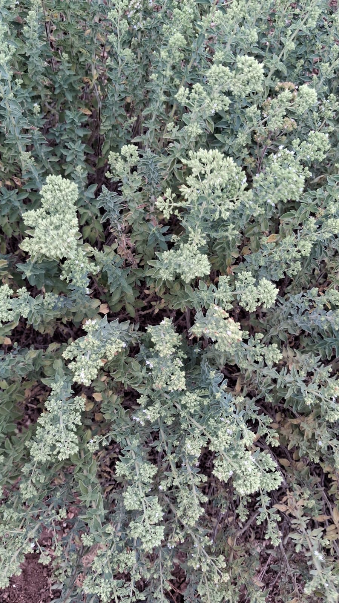

La Nostra Storia
Un'azienda di famiglia, un campo alla volta
Radici Vive nasce dal lavoro quotidiano di Andrea Di Venti e Christel Nespola, marito e moglie che coltivano origano nella campagna siciliana con la cura di chi conosce ogni fila del proprio campo.
Ogni pianta viene curata a mano, raccolta al momento giusto ed essiccata artigianalmente, senza fretta — per mantenere intatti profumo e sapore dell'origano di Sicilia.